Architectural / White · Red · Black
Redline Atelier
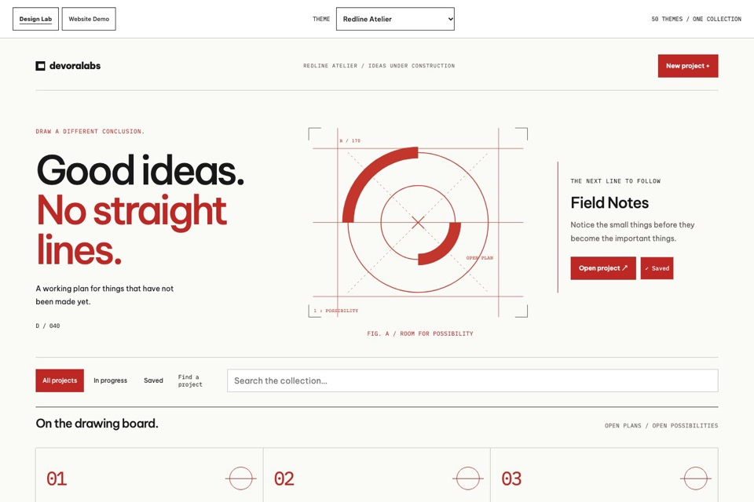
Open Design Lab ↗Precision with a rebellious red line.
Annotated construction arcs, three-part working plan and upright project sheets.
 devoralabsVOLUME FIVE / ORIGINAL STUDIES
devoralabsVOLUME FIVE / ORIGINAL STUDIES11 ORIGINAL STUDIES / THE COLLECTION GROWS TO 50
Eleven independent identities. Distinct structures, materials and personalities. Find a direction for the things you want to make.
Architectural / White · Red · Black

Open Design Lab ↗Annotated construction arcs, three-part working plan and upright project sheets.
Athletic / Cobalt · Chalk · Acid
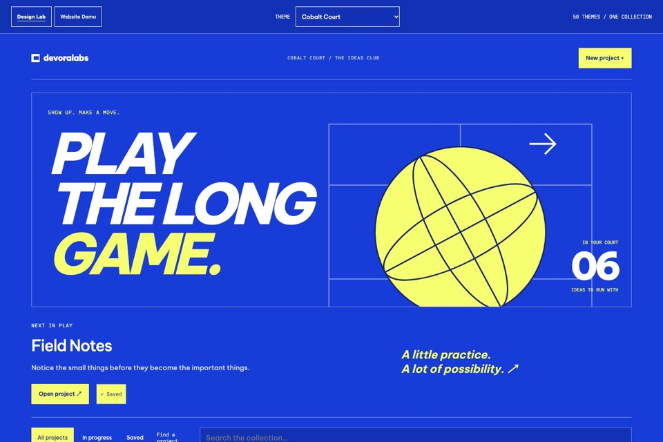
Open Design Lab ↗Oversized italic type, an original ball diagram and a numbered lineup.
Photographic / Charcoal · Safelight
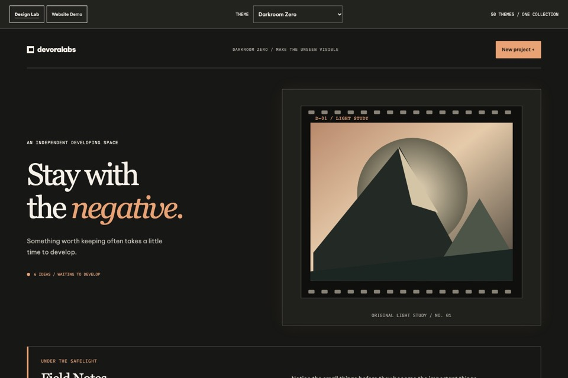
Open Design Lab ↗A photographic light study, a developing tray and perforated contact sheets.
Sculptural / Paper · Vermilion
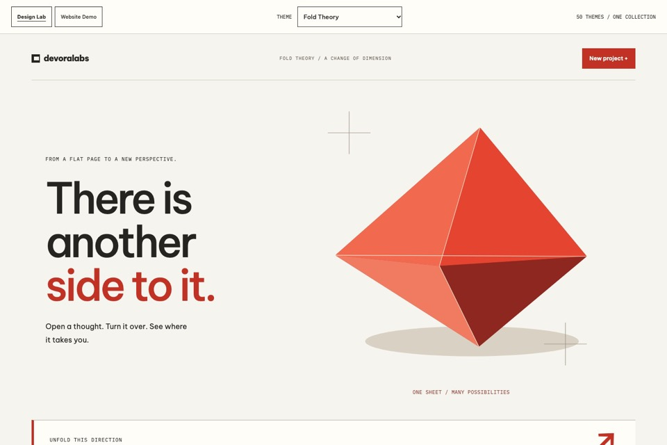
Open Design Lab ↗An original folded sculpture, faceted surfaces and a crisp asymmetric layout.
Typographic / White · Red · Black
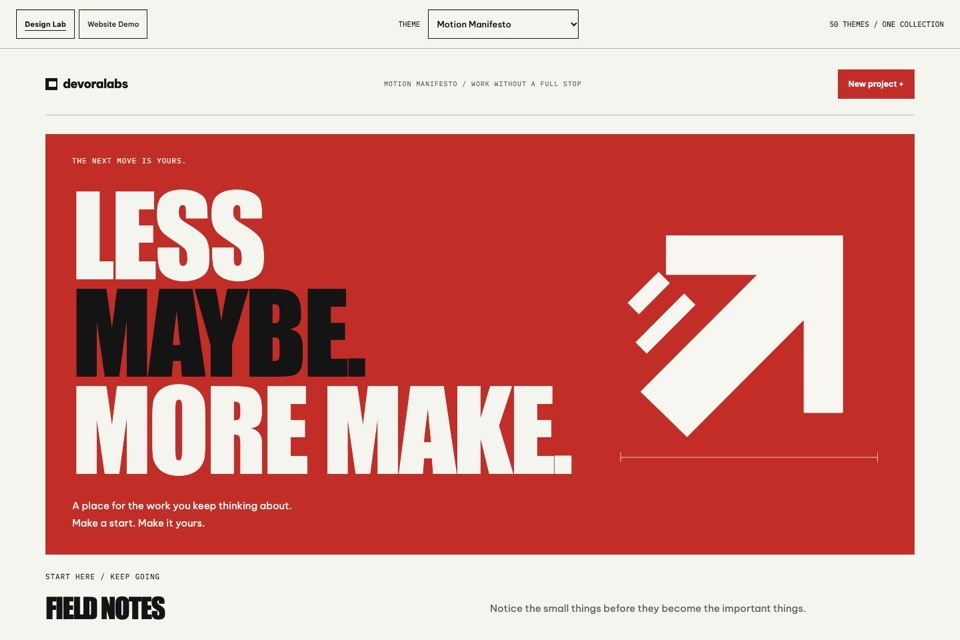
Open Design Lab ↗Condensed billboard type, an oversized arrow and an assertive working list.
Pixel / White · Red · Black
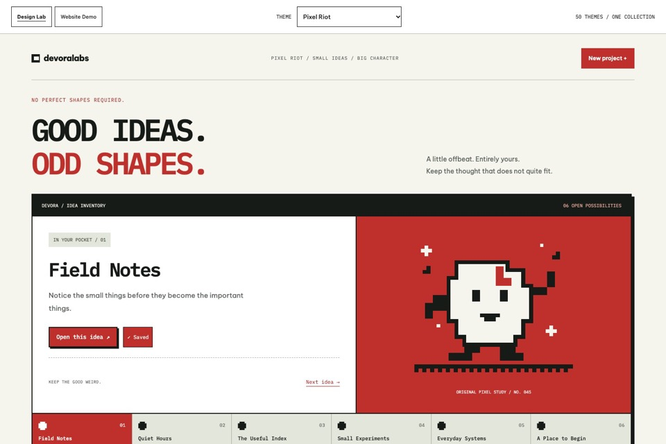
Open Design Lab ↗An original pixel character, stepped window frames and an interactive inventory of ideas.
Collage / Acid Lime · Ink · Paper
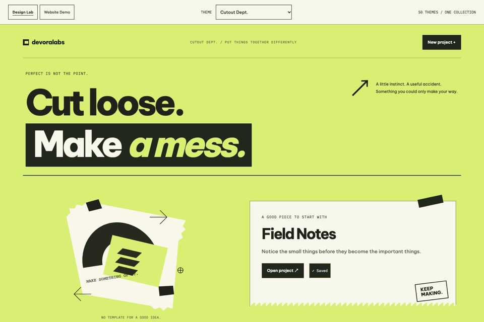
Open Design Lab ↗Torn paper edges, black tape, bold italic fragments and a creative pinboard.
Graphic / Vermilion · Cobalt · Stock
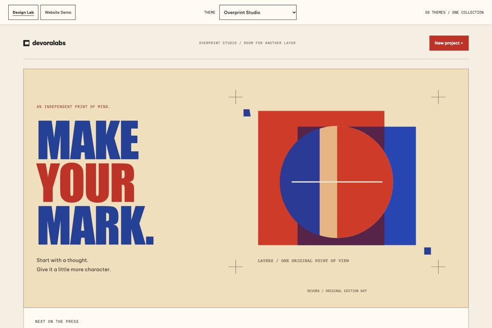
Open Design Lab ↗Overlapping print layers, bold condensed type and flat graphic edition sheets.
Dossier / White · Carbon · Red
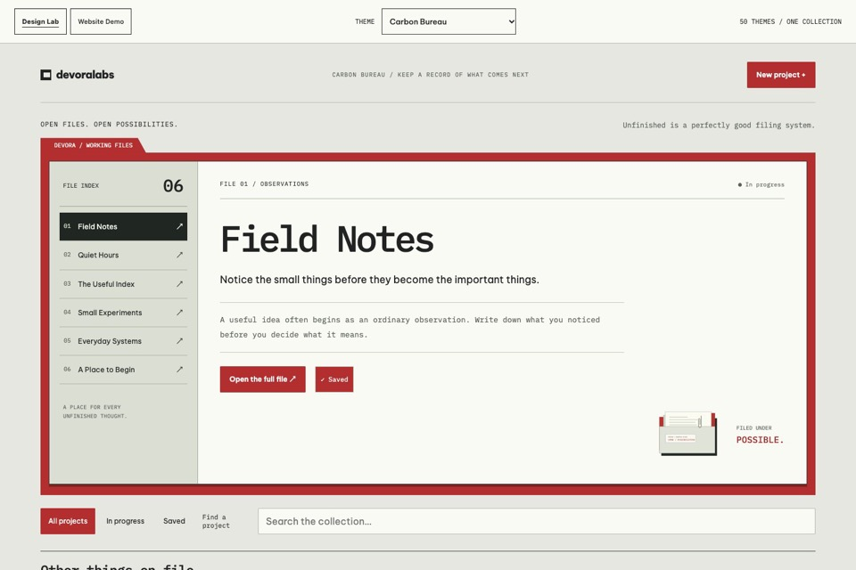
Open Design Lab ↗A working file index, a red-backed dossier and typewritten records you can actually open.
Industrial / Oxide · Concrete · Olive
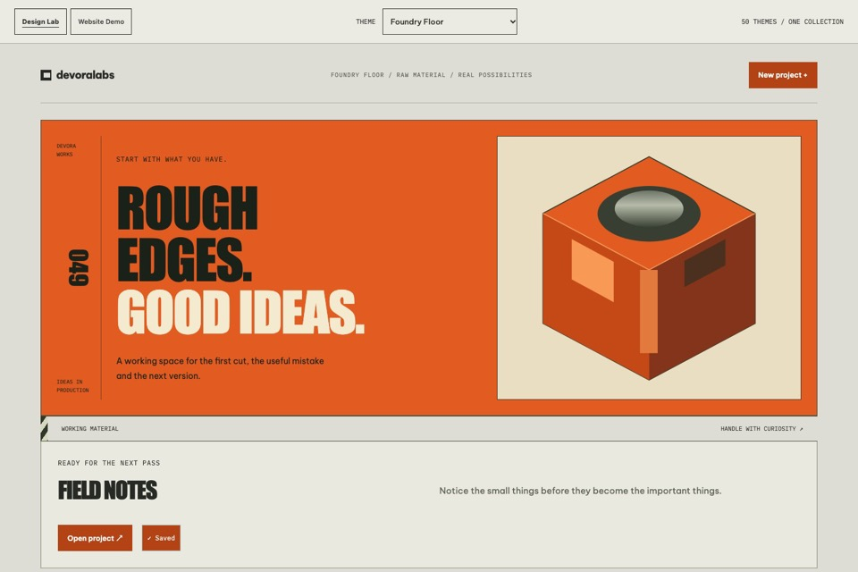
Open Design Lab ↗A mechanical object study, heavy workshop labels and raw material panels.
Cinematic / Black · Crimson · Chalk
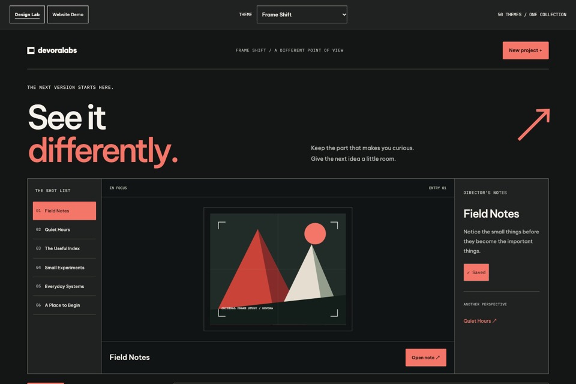
Open Design Lab ↗A three-part editing room, a project shot list and a graphic preview frame.